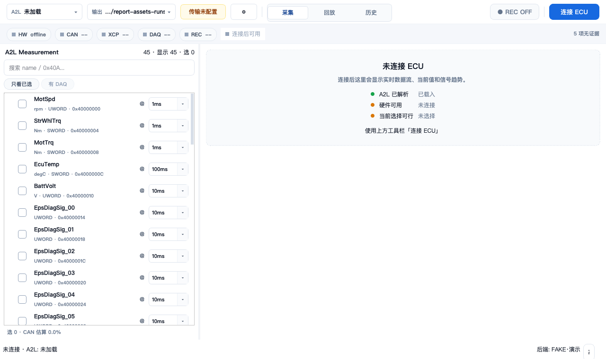
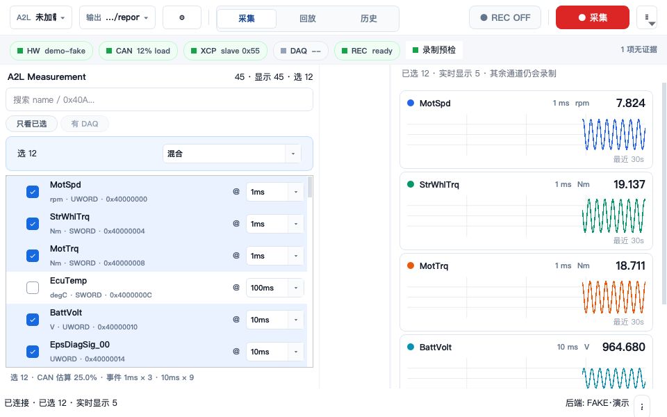
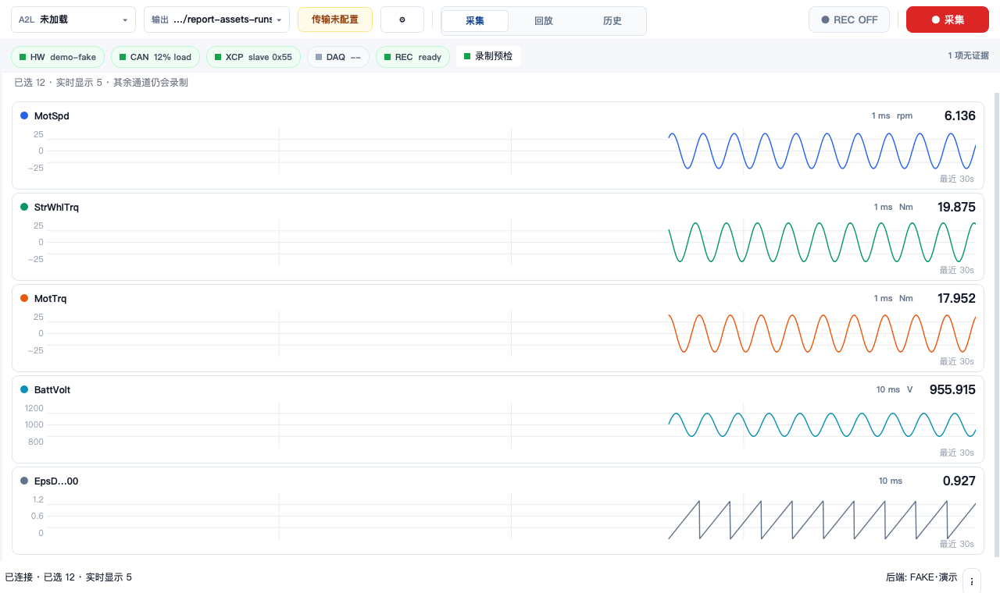
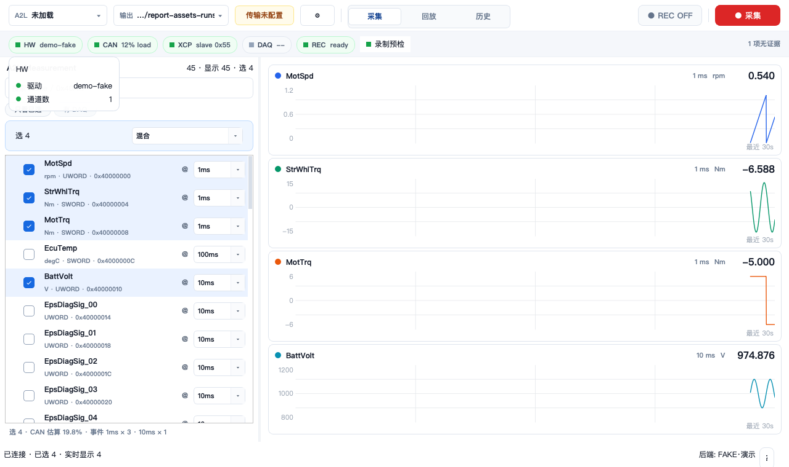

MF4 采集 Cockpit：左侧导航与横展审查
结论：不做横展
不应把测量选择器改成横向展开的主布局。应该保留纵向测量导航，但将其改为可发现的窄导航轨道（rail）+ 显式展开按钮；断连时默认收起，展开后恢复约 320 logical px 的测量面板。这样同时解决“初始过宽”和“收起后无入口”两个问题，并把更多横向空间留给实时曲线。
本次运行证据
- 运行
scripts/cockpit_ui_tour.py --assert：16 个流程/布局断言均通过；覆盖断连、连接待机、通道选择与固定、录制、黄/红告警、复盘、960px 窄窗及完全隐藏左栏。 - 运行
tests/acquisition_ui/test_visual_shell.py -q：9 passed。 - tour 使用 FAKE 演示后端与 45 个合成测量项；它证明当前 widget/状态渲染路径。用户截图中的 A2L 有 323 项、为真实界面截图；两类证据不等同。
- 本次 Qt 运行使用独立临时 HOME/QSettings 路径，未污染本机持久设置。
各状态实际长相与判断
| 状态 | 实测界面 | 布局判断 |
|---|---|---|
| 断连 | 左侧是完整的 A2L 搜索/列表；中心只有“未连接 ECU”检查卡。 | 中心内容最少，完整左栏占比显得尤其重。此态最适合默认收起为 rail，但 rail 必须保留“测量项 / 展开”入口。 |
| 已连接待机 | 左栏选择 3 项，中心纵向显示 3 张实时卡；预检信息在顶端 health strip。 | 选择工作仍需要纵向列表；横展会牺牲列表高度且不能改善实时卡宽度。保留可展开的左栏，默认展开宽度应小于当前 420px 初始分配。 |
| 已选 12 / 实时 5 | 左栏保留批量事件选择；中心只显示最多 5 张实时卡，其他通道仍录制。 | 中心才是采集时的主要读数区。长时间采集中，收起或保持较窄左栏的收益最大。 |
| 录制 | 5 张实时卡纵向堆叠，左栏的选择控件被冻结；卡片要保留曲线、名称、当前值、采样间隔和单位。 | 不应横展左栏；横向空间应优先给实时卡。是否自动收起由用户偏好控制，避免录制开始时无预期地改变布局。 |
| 960px 窄窗 | 中心宽约 397px 时，卡片统计文本按既有规则折叠，但名称和当前值仍可见。 | 现有窄窗降级可用；rail 能避免用户只能精细拖 3px splitter 才获得此空间。 |
| 左栏完全隐藏 | 中心扩展为全宽，曲线最清楚。 | 信息密度正确，但左缘仅余浅灰 3px splitter；没有标签、图标、可点击热区或键盘提示。这是当前首要可用性缺口。 |
问题定位
P0 折叠状态不可发现。现行采集页把左栏设为可折叠，并在 tour 中直接设置为 [0, 1277]。但样式把水平 splitter handle 设为 3px 的浅灰色；它在视觉上就是分隔线，用户把鼠标放到边缘时只会得到 resize 行为，不能理解为“点击恢复测量面板”。这与用户第二张截图一致。
不是实时曲线的横向布局问题。测量行同时含复选框、长名称/地址、事件选择；其自然结构是纵向滚动列表。把它横向铺展只会减少可见行数、加剧长名称截断，并继续从实时卡抢宽度。
实现层面的根因也对应：采集页是两个 widget 的 QSplitter，初始调用 setSizes([420, 860])，左栏范围为 320–460 logical px；而 handle 是 3px。在 Retina 截图中，约 320 logical px 会呈现为约 640 physical px，所以第一张截图的视觉比例并非异常 DPI，而是最小左栏宽度在中心空态下显得过重。
推荐交互（不横展）
| 优先级 | 建议 | 行为细节 |
|---|---|---|
| P0 | 将“0px 折叠”替换为常驻导航 rail | 保留约 24–28 logical px 的左侧可视轨道，含左/右 chevron、竖排或旋转的“测量项”标签，以及选中计数（如“12”）。rail 是按钮，不是拖拽边缘；点击才展开/收起。保留现有 splitter 供高级用户调整展开宽度。 |
| P0 | 断连默认收起 | 断连中心是连接检查卡，测量选择尚不能推进采集；首次进入默认 rail，立即减少空白中心旁的重面板。用户点击 rail 后，记住本次会话的展开偏好。 |
| P1 | 展开态设为紧凑而非宽展 | 将初始目标从 420 logical px 降到约 300–320 logical px（需结合真实 323 项长名称复核）。保留左栏 320px 作为较安全的完整操作宽度；不要把常规展开推到 420–460px。 |
| P1 | 录制时只保持用户意图 | 录制会冻结选择控件，rail 更有价值；但不建议录制开始时强制收起，以免实时曲线区域突然位移。可在首选项提供“开始录制时自动收起测量项”。 |
| P2 | 可访问性和提示 | rail 提供 tooltip（“展开测量项”/“收起测量项”）、可聚焦按钮和快捷键；展开后焦点落到搜索框，避免用户再次找输入位置。 |
截图证据
以下图片由本次 tour 写入本报告同级的 2026-07-10-cockpit-left-navigator-layout-audit-assets/；点击可查看原图。
{kind=link}



{kind=link}

{kind=link}

{kind=link}

落地边界与验收
- 不要以“增大/横展左栏”作为修复；它会与五张实时卡争夺最稀缺的横向空间。
- 不要只把 3px handle 涂成更深颜色；它仍是拖拽 affordance，不是可发现的状态切换。
- 实现后应新增/更新：rail 在折叠态可见且有文字/tooltip；点击可恢复左栏；断连默认 rail；展开态和 960px 窄窗均不遮挡实时卡当前值。
- 需使用真实 323 项 A2L 再做一次 onscreen 截图复核，重点检查最长测量名、事件下拉框和 Retina 下 300–320 logical px 的可读性。